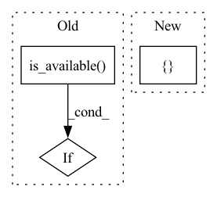

Pattern ID :12913
Before Change
def run_test_locally(fn):
if not torch.cuda.is_available() :
print("skip tests since cuda is not available")
return []
After Change
mp = multiprocessing.get_context("spawn")
results = [Result() for _ in range(nprocs)]
processes = []
for i in range(nprocs):
p = mp.Process(
target=fn,
args=(i, nprocs, results, env),In pattern: SUPERPATTERN
Frequency: 3
Non-data size: 3
Instances Fragment ID: 43590013
Project Name: baguasys/bagua
Commit Name: a9529bef66e367884316a2b2ebc917ff35bf6334
Time: 2021-08-26
Author: 45031995+wangraying@users.noreply.github.com
File Name: tests/comm/test_communicator.py
M Class Name: AnonimousClass
N Class Name: AnonimousClass
M Method Name: run_test_locally(1)
N Method Name: run_test_locally(1)
M Parent Class:
N Parent Class:
M File Name: tests/comm/test_communicator.py
N File Name: tests/comm/test_communicator.py
M Start Line: 106
M End Line: 122
N Start Line: 115
N End Line: 138
Before Change
class TestAsyncModelAverage(unittest.TestCase):
def test_algorithm(self):
if not torch.cuda.is_available() :
print("skip tests since cuda is not available")
return
After Change
@skip_if_cuda_not_available()
def test_algorithm(self):
nprocs = torch.cuda.device_count()
env = {
"WORLD_SIZE": str(nprocs),
"LOCAL_WORLD_SIZE": str(nprocs),
"MASTER_ADDR": "127.0.0.1",
"MASTER_PORT": str(find_free_port(8000, 8100)),
"BAGUA_SERVICE_PORT": str(find_free_port(9000, 9100)),
}
mp = multiprocessing.get_context("spawn")
processes = []
for i in range(nprocs): Fragment ID: 43590014
Project Name: baguasys/bagua
Commit Name: a9529bef66e367884316a2b2ebc917ff35bf6334
Time: 2021-08-26
Author: 45031995+wangraying@users.noreply.github.com
File Name: tests/torch_api/test_async_model_average.py
M Class Name: TestAsyncModelAverage
N Class Name: TestAsyncModelAverage
M Method Name: test_algorithm(1)
N Method Name: test_algorithm(1)
M Parent Class: unittest.TestCase
N Parent Class: unittest.TestCase
M File Name: tests/torch_api/test_async_model_average.py
N File Name: tests/torch_api/test_async_model_average.py
M Start Line: 62
M End Line: 76
N Start Line: 68
N End Line: 87
Before Change
self.layernorm_embedding = nn.LayerNorm(embed_count)
self.final_ln = nn.LayerNorm(embed_count)
self.token_indices = torch.arange(text_token_count).to(torch.long)
if torch.cuda.is_available() :
self.token_indices = self.token_indices.cuda()
def forward(self, text_tokens: LongTensor) -> FloatTensor:After Change
self.layernorm_embedding = nn.LayerNorm(embed_count)
self.final_ln = nn.LayerNorm(embed_count)
token_indices = torch.arange(text_token_count, device=device)
self.pose_tokens = torch.stack([ token_indices Fragment ID: 43590017
Project Name: kuprel/min-dalle
Commit Name: 3c28b1059bcd6b5cacbe0c0fc31bda326f2556b1
Time: 2022-07-15
Author: brkuprel@gmail.com
File Name: min_dalle/models/dalle_bart_encoder.py
M Class Name: DalleBartEncoder
N Class Name: DalleBartEncoder
M Method Name: __init__(8)
N Method Name: __init__(7)
M Parent Class: nn.Module
N Parent Class: nn.Module
M File Name: min_dalle/models/dalle_bart_encoder.py
N File Name: min_dalle/models/dalle_bart_encoder.py
M Start Line: 134
M End Line: 138
N Start Line: 113
N End Line: 130